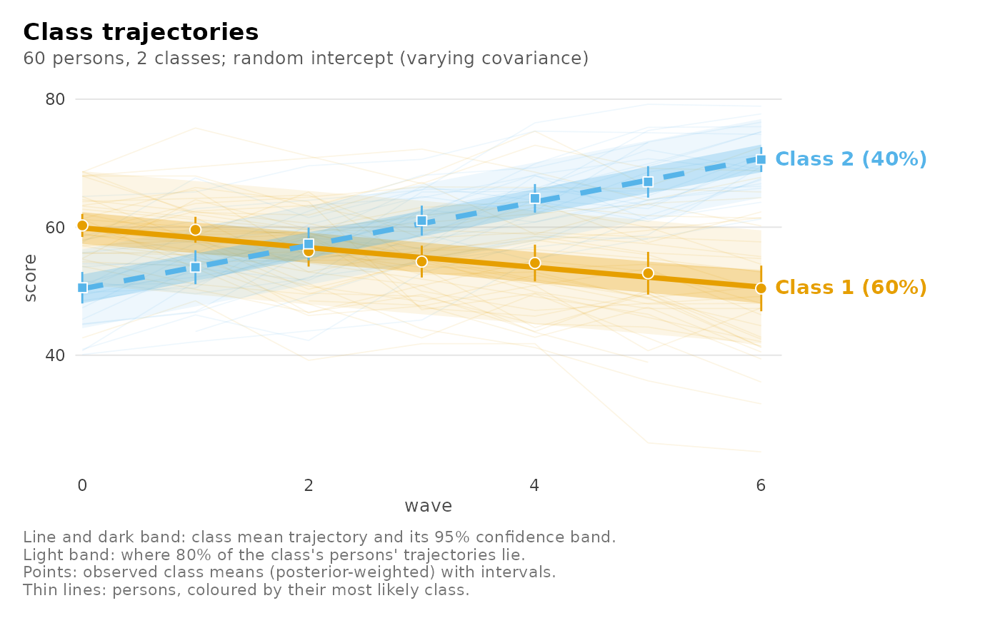

Plot a growth mixture model
Arguments
- x
A
latents_growth_mixturefit.- what
"trajectories"(each class's mean trajectory with its confidence band, the spread of its persons' own trajectories, and the observed class means at each time),"individuals"(a sample of persons across each class's range of classification certainty: observations, their class trajectory dashed, their own predicted curve solid),"coefficients"(estimates with confidence intervals and p-values, by term),"random"(predicted random effects with the class's model-implied 95% ellipse; degenerate covariances are flagged), or"classification"(one bar per person, split by their posterior class probabilities)."posteriors"is a synonym of"classification".- time
The numeric variable to draw along; by default the first numeric variable of
random.- facet
For
"trajectories",TRUEdraws one panel per class.- persons
For
"individuals", how many persons to show, or a vector of their identifiers.- max_persons
For
"trajectories", the most persons drawn behind the class trajectories (an even sample by class);0draws none.- spread
For
"trajectories", the share of persons' class-implied trajectories the light band holds (from the random effects);0hides it.- level
Confidence level of the bands and intervals.
- main, subtitle
Title and subtitle; defaults describe the view.
- ...
Unused.
Examples
few_students <- subset(growth_scores, student <= 60)
fit <- mixture_regression(score ~ wave, few_students, n_classes = 2,
id = "student", class_level = "group",
random = "intercept", seed = 1)
if (requireNamespace("ggplot2", quietly = TRUE)) plot(fit)
